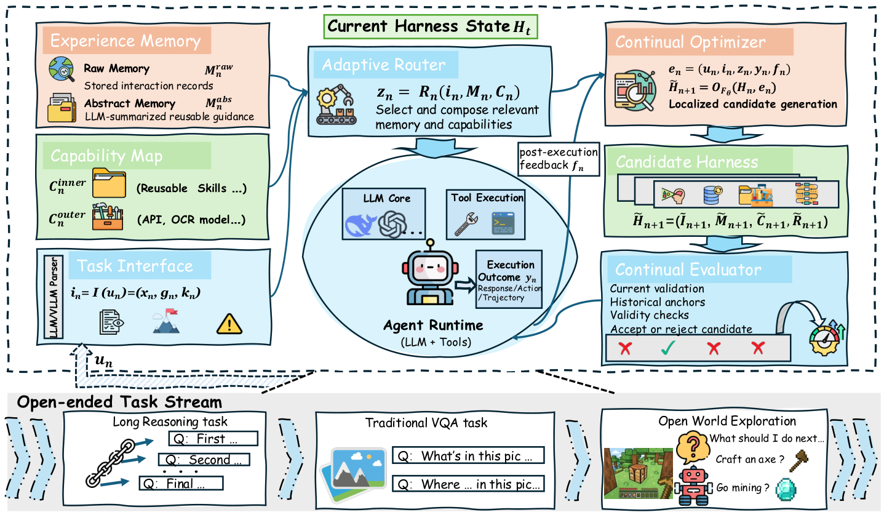
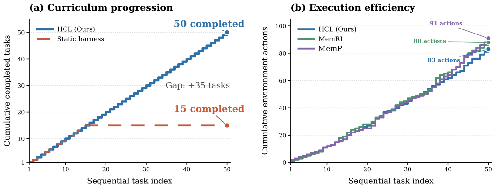

Harness Continual Learning: Guarded Evolution of the Agent State Outside the Model
Paper: arXiv 2608.19013 (v1, Aug 19 2026), by Borui Kang, Jinrui Gu, Junhan Lv, Wenbin Li, Lei Wang, Yang Gao — Nanjing University State Key Lab for Novel Software Technology + University of Wollongong. Grounded in the full arXiv HTML text.
TL;DR
- Harness Continual Learning (HCL) reframes continual learning around a frozen model: the state that evolves with experience is the harness — prompts, memories, skills, routing rules — and the paper names the failure mode this creates harness-level forgetting: a harness update that fixes the current task silently breaks previously reliable behavior, with the model untouched.
- The mechanism is guarded harness evolution: a Continual Optimizer proposes a candidate harness from post-execution feedback, and a Continual Evaluator commits it only if it passes three gates — current improvement \(\Delta_n \geq \delta_n\), historical retention \(D_n \leq B_n\) (rerunning a compact anchor set of past cases), and validity checks. The tolerance \(B_n\) is an explicit stability–plasticity dial.
- Results with frozen models: ALFWorld 47.1% (static harness) → 61.7–63.0% (HCL, Qwen3.5-9B); a 50-task Minecraft curriculum where the static harness plateaus at task 15 and HCL completes all 50; controlled 4-task streams where the retention sweep shows unguarded updates (\(b=\infty\)) end up worst — the gate isn't overhead, it's where the performance comes from.
Why this matters
This is the paper that gives your harness-evolution category its missing continual-learning vocabulary. Everything in the self-improving cluster — skill libraries, memory banks, self-edited prompts, routing rules — is an agent accumulating state outside the weights. The whole model-centric continual-learning literature (replay, regularization, architectural isolation) exists because naive sequential updates to weights destroy old capabilities. HCL's claim is that the same catastrophe recurs one level up: because prompts, memories, skills, and routing jointly shape execution, editing any one of them is a global intervention on behavior. A new skill can shadow an old one; a revised routing rule can misdirect tasks that used to work; a "better" task-interface prompt can break parsing for a format learned ten tasks ago.
What makes this more than a rename is that the paper measures it — controlled retention sweeps show stage-wise forgetting curves for harnesses, the direct analogue of the classic CL forgetting matrix — and shows the trade-off is controllable by a single scalar (how many previously-solved anchor cases you're willing to lose per update). That turns "my agent's memory made it worse" from an anecdote (the exact anecdote the fragility re-evaluation paper documents, see below) into a tunable design parameter.
The core idea
Formally: a frozen model \(F_\theta\) plus a deployed harness \(H_n\) at interaction step \(n\), where the mutable state is four jointly-versioned components
— Task Interface (input parsing/normalization prompts), Experience Memory (raw episodic records + LLM-summarized abstract guidance), Capability Map (external tools + inner skills abstracted from memory), Adaptive Router (retrieval/selection/workflow rules that assemble the execution context). After each interaction \(\mathbf{e}_n = (\mathbf{u}_n, \mathbf{i}_n, \mathbf{z}_n, \mathbf{y}_n, \mathbf{f}_n)\) (raw input, structured task, execution context, outcome, feedback), the Optimizer — the frozen model itself, prompted with an update rule — drafts a candidate:
The key move is that the candidate does not deploy by default. It must pass a hard admissibility gate combining three checks:
where \(\Delta_n\) is the improvement on current-task validation cases, \(v_{n,\ell}\) are validity checks (syntax, output schema, legal tool use), and the historical loss counts previously-solved anchors the candidate breaks:
with \(q(H,a)\in\{0,1\}\) the success indicator of anchor \(a\) (a stored raw input + success criterion, rerunnable under any harness). \(B_n=0\) is Stability-HCL (no regression tolerated); \(B_n=\infty\) is Plasticity-HCL (commit anything that helps now). Uncommitted candidates vanish; the deployed harness only ever moves through gated commits.

Figure 2 from the paper: execution path on top, proposal–evaluation–commitment loop underneath. The candidate harness stays isolated until it passes all three gates.How it works
Candidate generation is component-wise and greedy. When feedback implicates multiple components, the Optimizer walks them in a fixed order, generating up to \(K\) alternatives per component; each alternative is scored with all other components held fixed, the best admissible one is locked in, and the walk proceeds. If nothing passes for a component, it stays unchanged. This bounds LLM calls but means the search never considers coordinated multi-component rewrites.
Memory feeds skills. Raw Memory keeps a bounded number of concrete interactions per task (input, trajectory, feedback); Abstract Memory is LLM-consolidated guidance distilled from it (output conventions, reliable patterns, errors to avoid); inner skills in the Capability Map are a further abstraction of Abstract Memory into invocable procedures with explicit I/O and scope. This raw → abstract → skill pipeline is the same distillation ladder as MSCE-style memory-to-skills work, but here every rung is versioned and gated.
Anchors are the replay buffer. At the end of each task, anchors are sampled at a predefined ratio of previously successful and failed cases (80 per earlier task in the sweep experiments). They are hidden from the Optimizer — evaluation-only — so the candidate can't be prompt-engineered to the retention test. Deployed and candidate harnesses are compared under identical model, decoding, tool, environment, and seed conditions.
# Guarded harness evolution (condensed from §3.3)
deploy H_0; anchors A = {}
for each task interaction n:
i_n = I_n(u_n); z_n = R_n(i_n, M_n, C_n) # parse, route
y_n = execute(F_theta, z_n); observe feedback f_n
if feedback available:
for component in [I, M, C, R] flagged by f_n: # fixed order
for k in 1..K: # alternatives
H~ = swap candidate component k into current candidate
Δ = P(H~, V_n) - P(H_n, V_n) # current gain
D = #{a in A : solved by H_n, broken by H~}
if Δ >= δ_n and D <= B_n and all validity checks pass:
keep best admissible alternative
if any admissible full candidate: commit H_{n+1} = best; else H_{n+1} = H_n
A += sampled anchors (input + success criterion) from task n
Results
All gains come from harness updates only — the model is frozen in every run.
- ALFWorld (Qwen3.5-9B, 6-category stream, 134 eval episodes): Static Harness 47.12 avg; RAG 55.56; MemP 53.15; MemRL 51.51. Stability-HCL 61.74 (forgetting 2.64, best on 4/6 categories), Plasticity-HCL 62.98 (forgetting 10.94, solves 100% of Two-object). Same framework, one scalar apart — a clean demonstration that \(B_n\) is a real dial.
- Minecraft (Qwen3.6-27B, 50-task curriculum): static harness tracks HCL for 15 tasks then plateaus; HCL completes all 50, using 83 environment actions vs 88 (MemRL) and 91 (MemP) — accumulated skills reduce redundant re-diagnosis on later multi-step tasks.

Figure 3 from the paper: capability accumulation (left) and cumulative actions (right) over the 50-task Minecraft curriculum.- Textual reasoning (DeepSeek-V4-Flash; MuSiQue → ProofWriter → GSM8K → HotpotQA): zero-shot 45.50 → Stability-HCL 52.20 (forgetting 0.00) → Plasticity-HCL 64.70 (forgetting 0.07; GSM8K jumps 49.40 → 92.00). Multimodal (Qwen3.6-27B; detection → captioning → grounding → VQAv2): zero-shot 39.40, DGG 42.73, Stability-HCL 68.92 (forgetting 0.22). Caveat: MuSiQue drops below zero-shot under both profiles (35.0 → 27.6/29.0) — the first task in the stream pays for everyone else's harness.
- The retention sweep is the most instructive table. Fixing \(B_n \equiv b\): final avg 61.25 (\(b{=}0\)), 63.46 (\(b{=}1\)), 62.04 (\(b{=}3\)), 60.13 (\(b{=}\infty\)) with forgetting rising monotonically 0.39 → 3.45. Unguarded evolution is worst overall — commit-anything doesn't just forget more, it ends lower. And note the tension with Table 3, where Plasticity-HCL won by 12.5 points under a different data allocation: which side of the dial wins is configuration-dependent, but some gate always beats none.
- Ablations (Qwen3.5-4B): each of the four components contributes; the gate thresholds used throughout are \(\delta_n\) = at least two additional correct validation cases and ≥90% output-format compliance.
How it connects
- rethinking-harness-evolution / darwinx-harness-evolution / harnesscompass-guided-evolution — the evolution-side literature this plugs into: those works optimize the harness forward; HCL adds the missing backward constraint (don't break what worked) and the metric to detect when you did.
- fragility-self-improving-agents (tutorial, same week) — the Salesforce re-evaluation supplies the empirical indictment HCL needs: memory-based self-improvement amplifies run variance and degrades under shuffled task order, with contagious bad memories. HCL's anchor gate is precisely the mechanism that would catch a Haversine-style contagious memory before commit — an obvious experiment neither paper runs.
- SkillMisevo-Gym (tracked, no tutorial) — skill misevolution as a safety failure: unsafe experience distilled into persistent skills. HCL's validity + retention gates are the benign-case version of that paper's SAFEEVOLVE check-repair-retire loop; anchors with safety criteria would unify them.
- msce-memory-to-skills / oeo-self-evolving-skills — the raw-memory → abstract-memory → inner-skill ladder in HCL's Capability Map is the same consolidation pipeline, now with versioning and gated commits instead of append-only growth.
- macaron-v1-continual-learning — the productized claim that continual learning lives in the harness layer; HCL is the academic formalization with a forgetting metric attached.
Critical take
The gate is the contribution, and the gate is expensive: every candidate costs reruns on validation cases plus the anchor set under controlled conditions, and the anchor set grows with the stream (80 per earlier task in the sweep). The paper doesn't report the update-time compute multiplier, which is the number a practitioner needs. Retention is also only measured on the anchors — behavior outside the anchor distribution can still silently regress; \(D_n\) is a lower bound on harness-level forgetting, not the thing itself. The greedy fixed-order, one-component-at-a-time candidate search can't express coordinated rewrites (e.g., a new skill plus the routing change that invokes it), which is arguably where the interesting harness updates live. Baselines (MemP, MemRL) are reimplemented inside the authors' own framework — fair for controlled comparison, but it means no evolved-harness system from the wild was stress-tested. And the Table 3 vs Table 5 disagreement about whether plasticity or an intermediate tolerance wins suggests the gate's own evaluation signal is noisy — exactly the failure mode the fragility paper warns about, one level up. Still: as a formulation paper, it does what formulation papers should — names the phenomenon, gives it a metric, and shows a scalar that trades it off.
If you remember three things
- Harness-level forgetting is real and measurable: updating prompts/memory/skills/routing around a frozen model can break previously reliable behavior; HCL defines the metric (\(D_n\) on rerunnable anchors) and the controlled-stream protocol to expose it.
- Guarded evolution = propose, evaluate, commit: candidates must clear current-improvement, historical-retention (\(D_n \leq B_n\)), and validity gates before deployment; the tolerance \(B_n\) is an explicit stability–plasticity dial (\(b{=}0\) → zero forgetting, \(b{=}\infty\) → most plastic).
- No gate is the worst gate: in the controlled sweep, commit-anything (\(b{=}\infty\)) finished below every guarded setting (60.13 vs 63.46 at \(b{=}1\)) — for self-evolving harnesses, the evaluator is not overhead, it's load-bearing.